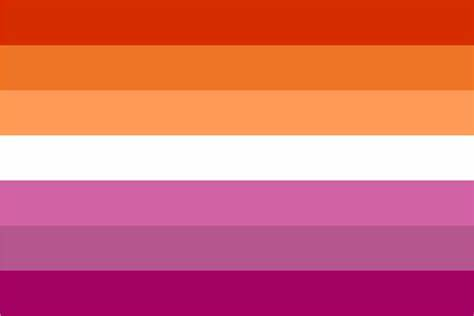

- Bisexual=
An individual that likes women, men and just any gender.
But they do have a preference, it could be a small preference
to dating one but also very big. Bi is the abbreviation of bisexual.
A bisexual can be of any gender, inside the binary/non binary gender.

- Gay/Homosexual=
A non-woman loving non-women, that includes everyone that
doesn't identify as a woman. For example anyone that identifies
as an indvidual under de non binary umbrella that also likes
anyone under the same umbrella. Alot of times these people are
masc presenting non binaries but is not a must or an acquirement.

- Lesbian=
An non-man loving non-men, that basically includes everyone that
doesn't identify as a man. For example anyone that identifies
as any label under de non binary umbrella that also likes anyone
also likes anyone under the same umbrella. Alot of times these
nonbinaries are femme presenting but is not a must or an acquirement.

- Pansexual=
An individual that likes all genders, just like bisexuals
But unlike a bisexual they don't have a preference in gender.
Pan is the abbreviation of bisexual. A pansexual can be of any gender,
inside the binary/non binary gender.

- Queer=
Is an umbrella term for an individual who is either not cisgender
or not heterosexual or neither. Some people use this label if they
aren't sure yet, know their aren't hetero/cis or genuinely don't care.
This was used as a slur but many have reclaimed it and feel
comfortable with this label. But don't assume always ask first if they
are comfortable with it! Rather safe than sorry.